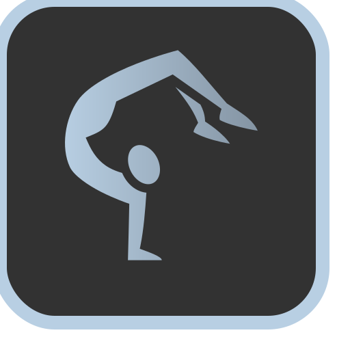
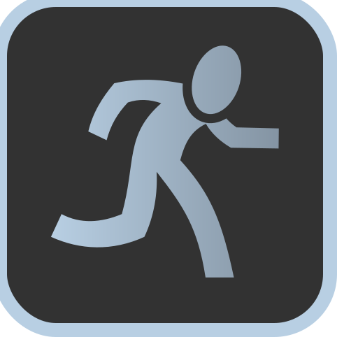
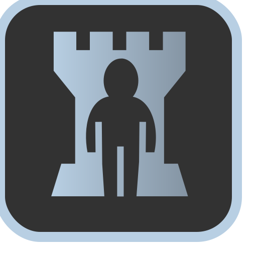

Superstar
Passive Skill. Your raw Charisma score increases by 00

Full Performance
Stance. While in this stance, you may give up your movement action to perform any dance you know.Pirouette
Whenever an attack misses you, you may perform a dance as a reaction.Danse Macabre
Whenever a creature dies within 60 feet, you may perform a dance as a reaction.Capoeira
Stance. You may make a single attack after performing a dance while in this stance.Fan Dance
Dance. Costs 0 ki points. Target self. This dance reduces the cost of your next ki-spending ability by up to 2.
Move it to the Rhythm
You can move up to half your speed whenever you perform a dance. This movement does not provoke any attacks of opportunity.Dance Partner
Once per combat, after you roll for initiative, you may choose to designate a dance partner. In doing so, you and your partner share the same initiative, choosing either initiative roll, and you both take your turn at the same time for the remainder of combat. You gain the following benefits:- Synchronized movement: You and your dance partner share the same movespeed, whichever speed is higher.
- Two to Tango: Whenever you perform a dance for another ally, your dance partner gains the benefits of that dance as well. Whenever you perform a dance for your dance partner, you gain the benefits of that dance as well.
- Perfect Coordination: You may perform any teamwork tactic with your dance partner for 1 ki point.
- Tandem Dance: Whenever you perform a dance, your partner can give up their reaction for this round to assist you, allowing you to perform a second dance.
Soloist
Once per combat, after you roll for initiative, you may choose to be a soloist (a Soloist may not designate a Dance Partner). A Soloist gains the following benefits:- Aria: Your allies all gain one inspiration die at the start of combat and are always under the effect of countercharm while in your presence.
- Superstar: Your presence is so overwhelming, enemies are naturally drawn towards you. At the end of your turn, you may choose to taunt all enemies within 60 feet. If they fail a wisdom saving throw against against your DC, they have disadvantage attacking any target other than you until the end of your next turn.
- Spotlight: Place a 5 foot spotlight on the battlefield when you roll initiative. Your next dance while standing on that spotlight affects all allies (or enemies) within 100 feet. Once used in this manner, the spotlight disappears.
Stance Dance
You become so adept at performance, you may now enter up to two difference stances at the same time instead of being limited to one.Dragon Dance
Dance. This special performance is unlike other dances you know. It can only be performed once per day and requires all of your remaining ki points (10 ki points minimum). When a dragon dance is performed, all allies within 60 feet gain an extra action immediately.
0
Combat Idol
Passive Skill. Increases your health by 00
Graceful Strike
Whenever you successfully stun a target with stunning strike, you are refunded 1 ki point.Still Stance
Stance. When entering still stance at the start of your turn, you delay and split up your turn, taking each component at the end of enemy turns. While in still stance, you may take your move action, your action, and your bonus action at the end of any enemy turn, as if they were legendary actions. Any unused actions at the start of your next turn are lost.Ripple Stance
Stance. Whenever someone successfully strikes you in melee, you block some/all of the damage of the attack. Subtract your martial arts die + your monk level + 0 from the damage of the incoming melee attack. In response, you can also choose to counterattack as a reaction, dealing your normal damage plus all of the damage you blocked. This counterattack is treated as an attack of opportunity.Reactive Stance
Stance. You lose your action, but you gain 3 additional reactions per round and the ability to perform a flurry of blows in place of an attack of opportunity. Additionally, you now threaten an area with a radius equal to half of your movement speed. Performing an attack of opportunity within this zone moves you to within melee range of the target. The zone you threaten changes if you decide to move to the target.Forestallment
Enemies now provoke attacks of opportunity whenever they move into your range, in addition to whenever they leave range. They also provoke attacks of opportunity if they take any action that is not a melee attack while within a threatened zone (e.g. casting a spell, making a ranged attack, using an item, etc)..
Guardian Stance
Stance. You lose your action but you gain 3 additional reactions per round and the ability to perform a flurry of blows in place of an attack of opportunity. Specify an ally within 5 feet of yourself. Until the start of your next turn, while that ally is within 5 feet of you, you protect that ally. Treat your ally's threatened zone as your own. You may use your reactions to either take an incoming attack directed at your ally or to make an attack of opportunity. Guardian Stance ends if the protected ally leaves your side.Unending Flurry
Whenever all hits in your flurry of blows connect, you may attempt to flurry again, its cost increasing by 2 each time (e.g. 1, 3, 5 for three flurry of blows, costing a total of 9 ki points)Flowing Stance
Stance. The ultimate defense. While in this stance, your AC increases by 10. If the incoming attack is higher than your base AC but lower than your AC with Flowing Stance (AC + 10), it costs 1 ki point to evade the attack.Pressure Points
Your critical threat range increases to 18-20. Furthermore, whenever you land a critical strike, you may impose one of the following effects:- Addle: If the creature fails a wisdom saving throw against your DC, you muddle their perception, causing their next attack or spell to strike a random target.
- Aura Drain: Drain the target's aura, granting you 1d4 ki points if they fail a Wisdom saving throw against your DC.
- Delayed Damage: The target takes the same total damage again from your attack at the start of their next turn if they fail a constitution saving throw against your DC.
- Five-Fingered Death: Forego the extra critical strike damage to attempt a finishing blow. If the target has 50 hp or less after your attack without the critical strike damage, they instantly die or are knocked unconscious (your choice). If not, they take no additional damage.
- Redirection: If the target fails a constitution saving throw against your DC, they must use their movement to walk in a direction of your choosing at the start of their next turn.
Hurricane Stance
Stance. While in this stance, the number of attacks you can make with your attack action increases from 2 to 4 and the cost of your flurry of blows is reduced to 0 ki points. However, you lose your reactions while in this stance.Also improves Unending Flurry
0
Gravity Rush
Passive Skill. Your speed is increased by 0 feet.0
Jupiter Stance
Stance. You are considered two category sizes larger for the purpose of grappling, carrying, throwing, and other strength-based checks. Whenever you perform a melee strike, you can choose to knock the target back 0 feet if they are smaller than your effective size category should they fail a strength save against your DC.Lunar Stance
Stance. While using Lunar Stance, you become light as a feather, reducing your weight to anywhere from your normal weight to 1/1000th of your normal weight (your choice) and increasing your jump height by 10 times. You also gain the benefits of Feather Fall and Water Walk while in this stance.Tidal Lock
Whenever you successfully perform a stunning strike on a target that is in midair, they will stay stuck in midair while stunned, as if under the effects of Immovable Rod. You can also subject yourself to the same effect for 1 ki point as a reaction, lasting until cancelled. This effect can be used to brace yourself against impact or to stabilize yourself, as if you were standing on solid ground.Gravity Rush
Stance. Improves Gravity Manipulation stance. No longer costs a ki point per turn to maintain Gravity Manipulation.Shooting Stars
Stance. You can perform ranged unarmed attacks with a 0/0 ft range. You need rocks, debris, or other fist sized projectiles within 5 feet in order to use Shooting Stars. You may choose to have these projectiles orbit you while Shooting Stars Stance is active.Gravity Slingshot
Your Deflect Missiles improves to the following: You can use your Reaction to deflect an incoming ranged weapon attack OR ranged spell attack. When you do so, the damage you take from the attack is reduced by your martial arts die + your monk level + 0. If you reduce the damage to 0, you can spend 1 ki point to use your gravitational manipulation to slingshot it towards a target of your choice. Make a ranged attack roll. If successful, the redirected attack deals damage equal to your melee attack + the amount of damage you blocked.Gravity Palm
Stance. Your melee attacks are now a short-ranged area of effect, covering a 20 x 20 foot square with a range of 30 feet. Furthermore, whenever you perform a melee attack, you can also choose to knock the target down if they fail a strength save against your DC.Reverse Gravity (Dance)
Dance. Costs 10 ki points. You reverse gravity in a 60 foot area centered on yourself for 1 round as the spell Reverse Gravity. You may choose to maintain this state of reverse gravity by spending 3 ki points every round after the first. Unlike the spell, you may choose to orient the direction of gravity in any manner you choose.Meteor Kick
You no longer take damage from falling. Furthermore, whenever you make an attack after falling or sliding, you deal additional damage equal to the distance travelled. Roll for an additional martial arts die worth of damage per 30 feet travelled. The maximum distance for this ability is 300 feet or 10 martial arts dice, at which point you've reached terminal velocity and can no longer increase your damage. If using Jupiter Stance's or Gravity Palm's secondary effects with this attack, the target must roll against your DC with disadvantage and they are knocked back a distance equal to the normal distance * number of martial arts dice used.Neutron Body
You gain immunity to critical hits. Your Stunning Strike improves to the following:- Stunning Strike: Your stunning strike now slows the target as well. When performing a stunning strike, the target must roll to save twice, one against the stun and one against the slow. If they fail both, they are stunned for 1 round and then slowed for 1 round whenever they recover from being stunned. If they fail one but succeed on the other, they are stunned/slowed for 1 round.
Your gravity rush abilities also improve.
0